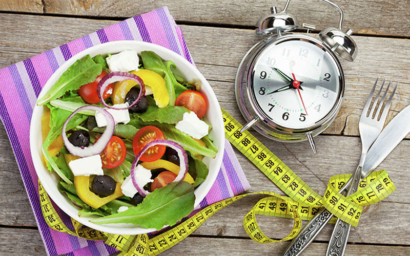

Вот уже несколько лет в контексте похудения, здоровья, продления молодости и долголетия звучит метод интервального голодания. Наверняка вы слышали об Intermittent fasting от своих друзей, натыкались на него в соцсетях и, возможно, даже думали, попробовать сами. Для читателей нашего ФитоБлога мы постарались собрать самую свежую и достоверную информацию на эту тему. Мы расскажем о сути «прерывистого» или «интервального» голодания, какие преимущества оно несет, кому стоит следовать такому режиму питания, а кому он противопоказан.
Что такое интервальное голодание и в чем его концепция?
Его называют по-разному: интервальное, периодическое, цикличное голодание, фастинг. Суть данной практики состоит в том, что все время в сутках (или дни) делится на интервалы полного отказа от пищи и периоды, когда человек ест обычным образом без ограничения продуктов и досыта. Как уверяют адепты диеты, она очень помогает сбросить вес, а также оздоровить организм.
Такой пищевой режим может понравится многим: наконец-то появился способ есть все, что хочется, и при этом не бояться потолстеть. И еще: гораздо проще пропустить завтрак, обед или ужин, чем значительно ограничивать себя в количестве и калорийности еды.
Сегодня интервальное голодание практикуют многие мировые звезды: Бьенси, Миранда Керр, Лив Тайлер, Том Харди и другие знаменитости.
В принципе, периоды ограничения человека в еде существовали из покон веков. Первые упоминания о лекарственном голодании датируются 5-ым веком до нашей эры и найдены в записях древнегреческого ученого и врача Гиппократа. В средние века голоданием лечили большинство болезней.
Индийские йоги считают, что отказ от еды очищает тело и разум. Наконец, во всех религиях имеются дни поста, когда употребляется только низкокалорийная пища или практикуется полный отказ от еды. Так, в месяц Рамадан мусульмане могут есть и пить только в темное время суток, православные также периодически постятся. Таким образом мудрость веков доходит до нас в традициях, обычаях, в том числе и религиозных. И то, что обнаружили современные ученые относительно пользы периодического голодания, давно было известно нашим предкам.
Механизмы влияния на клетки и гормоны
Идея интермиттент-фастинга получила особое развитие после открытия японского ученого Есинори Осуми. Изучая процессы аутофагии у дрожжевых грибков, он заметил, что периоды голодания положительно сказываются на обновлении клеток и помогают замедлить процессы старения, за что в 2016 году был удостоин Нобелевской премии.
Как объясняют ученые, эффект от интервального голодания определяется процессами, которые начинают происходить в теле примерно с 12-го часа голодания. Наступает так называемая катаболическая фаза. В это время подходят к концу запасы гликогена в печени и мышцах. В качестве альтернативного источника энергии организм начинает использовать жир. Уровень глюкозы в крови падает, вырабатываются кетоновые тела, которые служат топливом для всех нужд организма. Голодание приводит к изменению метаболических и внутриклеточных процессов, а также в уровне некоторых гормонов.
Опыты на лабораторных животных показали, что при полном голодании у крыс затухают воспалительные процессы, снижается артериальное давление и уровень глюкозы в крови, улучшается инсулинорезистетность, уменьшается количество плохого холестерина. Но самым интересным открытием явилось то, что энергетический дефицит значительно влияет на продолжительность жизни животных, увеличивая ее на 30%.
Выяснилось, что длительное отсутствие еды активизирует у грызунов внутриклеточные механизмы, ответственные за старение, включает процесс аутофагии, когда внутри клетки распадаются и удаляются вредные частицы – продукты жизнедеятельности. Стимуляция аутофагии является одним из действенных методов замедления старения. Кроме того, недостаток энергии предохраняет генетический материал от мутаций, а значит, снижает риск онкологии. При этом, для получения стабильного эффекта от голодания необходимо снизить количество получаемых калорий на 20%.
Такая стратегия, несомненно, работает у тех, кто ставит своей целью – похудение, однако она не годится для длительной перспективы и не подходит тем, кто хочет сохранить и улучшить свое здоровье. Голод постепенно истощает организм, лишая его жизненно важных нутриентов и снижая мышечную массу.
Так родился метод Intermittent fasting - интервального голодания, которое запускает механизмы аутофагии и сохраняет все полезные эффекты голодовки: нормализует вес, снижает сахар и холестерин, тормозит процесс старения, уменьшает риск онкологических и нейродегенеративных заболеваний. При этом человек физически и психологически не испытывает значительных страданий, так как в окно питания может ест практически все, что хочет. И, в отличии от жестких диет, в таком режиме можно находится очень долго без вреда для здоровья.
Польза для здоровья
Знаменитое иллинойское исследование доказала однозначную пользу диету голоданием для снижения веса. Нутрициологами университета в Иллинойсе был поставлен следующий эксперимент.
Тестируемые (58 человек с ожирением) были разделены на три группы: одни питались в промежутке с 15:00 до 19:00, прерываясь на 20 часов, другие - с 13:00 до 19:00, оставаясь без пищи 18 часов, третья группа была контрольная. В ходе эксперимента разрешалось есть все, что хочешь, в качестве напитка использовали исключительно воду. По окончанию опытов было установлено, что участники первой и второй группы, в отличие от контрольной, сбросили свой вес примерно на 3%. Таким образом, такой режим питания можно считать эффективным для борьбы с избыточным весом и полезным для здоровья в целом.
Как уверяют многочисленные сторонники практики, следуя циклическому голоданию удается:
- - скорректировать вес
- - улучшить инсулинорезистентность
- - снизить уровень инсулина и сахара в крови
- - уменьшить количество плохого холестерина
- - очистить организм от вредных токсинов и продуктов метаболизма
- - повысить мозговую деятельность
Установлено, что при переходе на периодическое голодание уже в течение первых трёх дней обменные процессы ускоряются на 10%. Повышается стрессоустойчивость, работоспособность, улучшается сон и настроение, во всем теле ощущается лёгкость. Оно положительно сказывается даже на внешности: укрепляются волосы и ногти, оздоравливается и омолаживается кожа.
Какие же подходы к интервальному голоданию существуют, как они работают и работают ли вообще? В журнале Nutrition 2020 году были собраны и опубликованы последние исследования относительно различных вариантов промежуточного голодания.
Основные схемы интервального голодания
Сегодня наиболее известны следующие варианты интервальной диеты: 6/18, 8/16, 18/36 24/24, еда через день и система 5 дней/2 дня. Первая цифра – это количество часов или дней, когда можно есть - так называемое, «пищевое окно», вторая - определяет время полного отказа от пищи, т.е. период голодания.
Голодание 5/2
Данный режим был придуман доктором Майклом Мосли и не предполагает особых запретов и ограничений. Главное – соблюдать периоды еды и голода: 5 дней в неделю можно питаться обычным рационом, а на 2 дня – снизить дневную калорийность до 500 калорий (для мужчин – 700). Автор методики обещает, что благодаря такой диете в среднем в неделю можно терять до 1 кг веса, а с учетом хороших физических нагрузок даже больше. Считается, что такой режим питания психологически воспринимается легче, так как практически не предполагает отказа от привычной еды. В разгрузочные дни можно позволить себе омлет из двух яиц с овощами, салат и творог, т.е. формально вы не голодаете. Диета снижает риск сердечно-сосудистых заболеваний и рака, улучшает биохимические показатели здоровья, приводит к падению веса.
Голодание 16/8
В данном варианте пищевое окно занимает 8 часов. В течение этого времени можно есть все или почти все, а на последующие 16 часов приходится режим голода. Таким образом, если ваш завтрак начинается в 10 часов, то в 18 часов вы должны закончить ужин.
Исследования на грызунах показали высокую эффективность данного режима относительно ожирения, инсулинорезистентности и общего здоровья. Но работает ли это на людях?
В мае 2019 года группа ученых из университета Алабама провели тестирование интервального голодания по схеме 16/8 на добровольцах и исследовали его молекулярные механизмы. Участников эксперимента разделили на 2 группы. Все люди были в целом здоровы, примерно в одинаковой физической форме, вели сидячий образ жизни и имели избыточный вес. В ходе эксперимента тестируемые получали пищу одинаковую по составу белков, жиров и углеводов рацион (50% - углеводов, 35% жиров и 15% - белков). Одну группу кормили с 8 утра до 14 часов, а другую с 8 утра до 20 часов.
По окончании исследований в первой группе был получен следующий результат:
- ➤ значительно снизился среднесуточный уровень глюкозы в крови
- ➤ уменьшились колебания сахара в течение суток
- ➤ повысилась чувствительность к инсулину
- ➤ на 3% уменьшился вес и на 4 см - объем талии
- ➤ активизировались гены, ответственные за сертуины, аутофагию (способность клетки уничтожать старые и повреждённые белки), перекисное окисление липидов и за борьбу со свободными радикалами (т.е. за старение)
- ➤ повысился нейротропный фактор мозга, снижающий риск заболеваний Альцгемера и Паркинсона
- ➤ снизилась активность внутриклеточного фактора mTor, который способствует долголетию
Кроме того, у людей в этой группе парадоксально упал аппетит несмотря на то, что значительную часть суток (16 часов) они голодали. Последний факт ученые связывают со снижением уровня инсулина и гормона голода – грилина.
Голодание 13/11 («Циркадное»)
Это один из самых легких вариантов интервального голодания, поскольку дает достаточно широкое окно питания в 11 часов, по сути это всем известная формула «не есть после 6 часов». Диета соответствует циркадным ритмам, отсюда ее второе название
Данная методика подразумевает, что основной прием пищи приходится на утро, а последний – должен быть легким и не поздним. После плотного и насыщенного завтрака (примерно с 6 до 7:30 утра) происходит активизация перистальтики кишечника, выделение желудочного сока. Белки, жиры и углеводы максимально расщепляются, чтобы дать необходимую энергию телу, которая правильно расходуется и не откладываются в жир. Ужин должен быть не менее, чем за 4 часа до сна и состоять из продуктов с низким гликемическим индексом. Такой режим питания способствует похудению, в том числе и у людей с нормальным весом, нормализует сон, улучшает общие характеристики здоровья.
Экстремальные виды голодания 24/0 и 36/0
Это наиболее радикальные виды практики, так как предполагают отказ от пищи на целые сутки или полтора. Врачи не советуют прибегать к такой диете чаще, чем раз в неделю. Интересно, что несмотря на достаточную жёсткость суточного голодания исследования по оказываемому эффекту достаточно противоречивы. Одни показали, что у здоровых и стройных мужчин никакие показатели вообще не изменяются. В другом эксперименте у полных мужчин происходит снижение веса на 5,8%. В третьем - у этой же категории людей вес не менялся, но улучшалась чувствительность к инсулину.
Недостатки интервального голодания
К сожалению, несмотря на многочисленные преимущества интервального голодания, у него есть свои минусы, а именно:
- ✓ Недостаточно исследований о пользе для всех категорий населения.
- ✓ Поначалу психологически тяжело выдержать ежедневное голодание.
- ✓ Необходимо следить за тем, чтобы не превысить калории.
- ✓ Имеется риск неправильного питания фастфудами и сладким.
- ✓ Будет сложно тем, кто привык есть по часовому режиму дробно и часто.
- ✓ Худеть на голодании чревато снижением мышечной массы, поэтому необходимы регулярные физические нагрузки.
- ✓ Есть противопоказания по ряду заболеваний.
- ✓ При длительной практике возможен застой желчи и развитие желчнокаменной болезни.
- ✓ Не подходит для беременных и кормящих женщин.
- ✓ Длительный отказ от еды может привести к головным болям, стрессу, дискомфорту в желудке и кишечнике, изжоге и отрыжке.